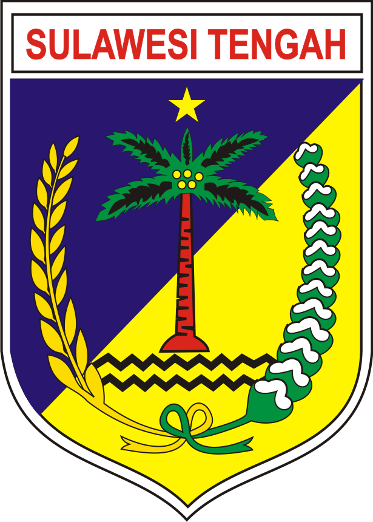
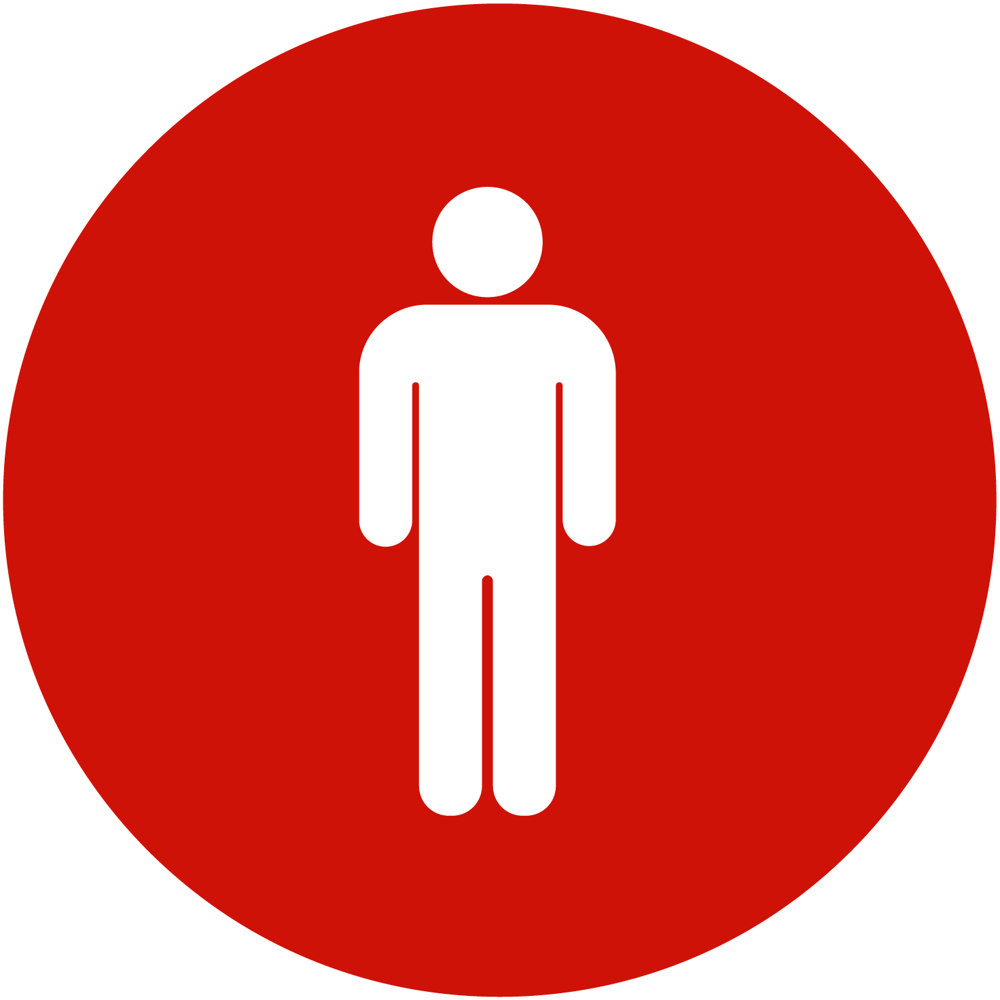
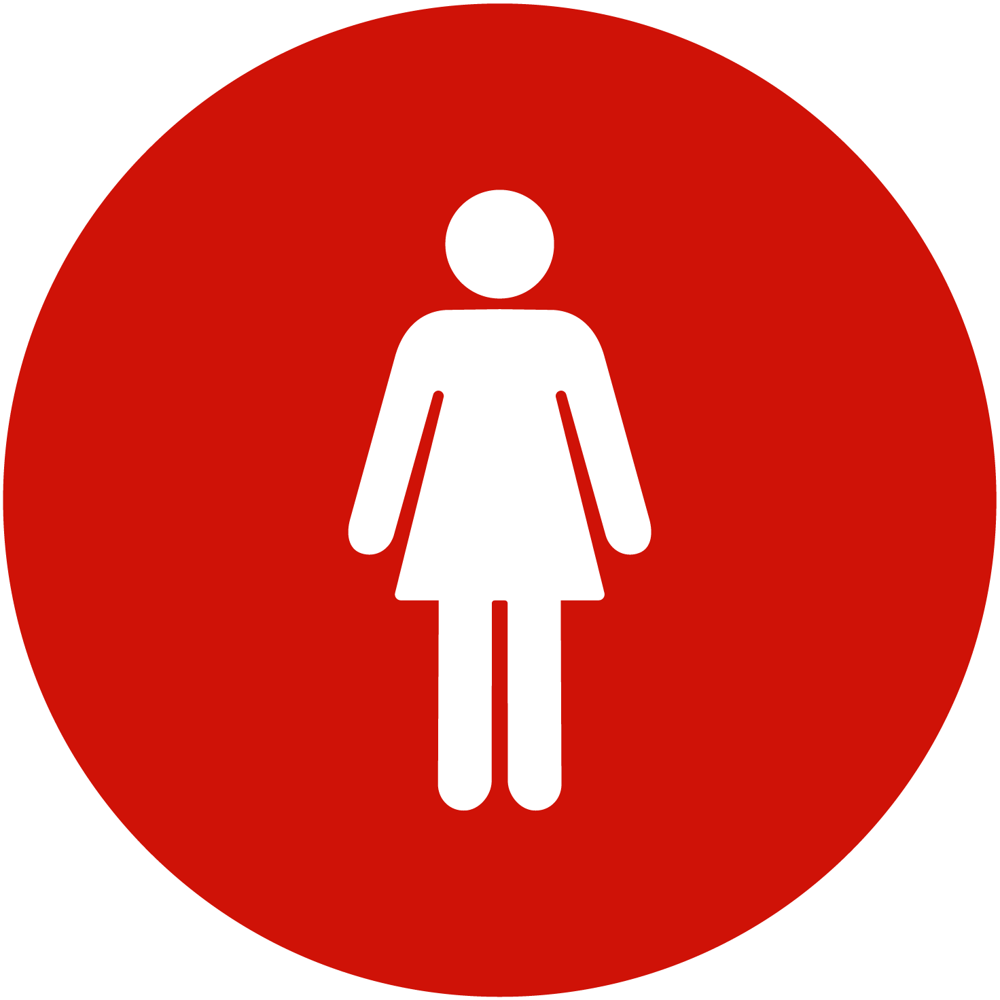
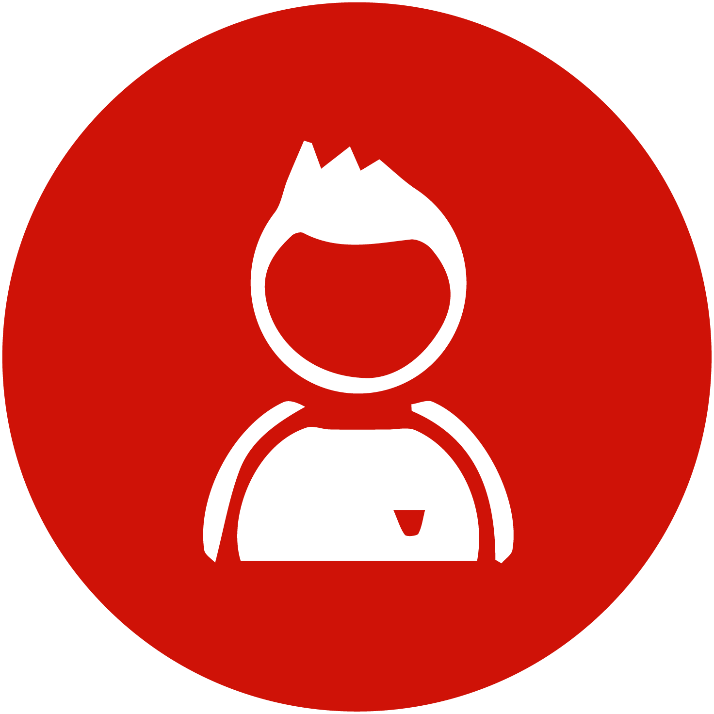

|  |
KELOMPOK KERJA PELIBATAN MASYARAKAT
Gempa Bumi, Tsunami dan Likuifaksi di Sulawesi Tengah |
 |
Dashboard umpan balik dari masyarakat Sulawesi Tengah ini, diterima dari berbagai lembaga kemanusiaan yang terlibat dalam Kelompok Kerja Pelibatan Masyarakat dan Akuntabilitas Sulawesi Tengah. Dashboard ini dirancang untuk membantu lembaga ataupun pekerja kemanusiaan membuat keputusan dan menyesuaikan program dengan memberikan wawasan tentang apa yang disampaikan masyarakat Sulawesi Tengah.
| Interaksi |
|  | |
|---|---|
| Laki-laki |
|  | |
|---|---|
| Perempuan |
|  | |
|---|---|
| Anak Laki-laki |
| Anak Perempuan |